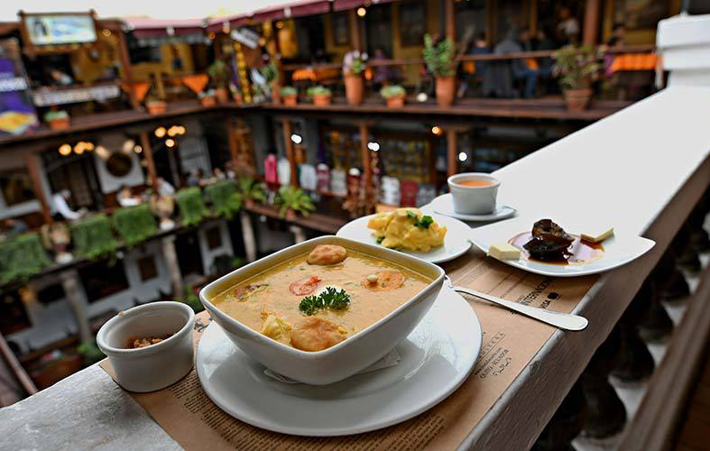

<ion-card *ngIf="menu.intidmenu > 0; else nodata">
  
  <ion-card-header>
    
    <ion-card-title> Menú del día </ion-card-title>
    <ion-card-subtitle>{{ menu.intidtipomenu.strtipo }}</ion-card-subtitle>
  </ion-card-header>

  <ion-card-content>
    <p> El menú consta de {{ menu.strcaracteristicas }} </p>
  </ion-card-content>
</ion-card>

<ng-template #nodata>
  <ion-card>
    <ion-card-header>
      <ion-card-title> Menú del día </ion-card-title>
      <ion-card-subtitle>No existe</ion-card-subtitle>
    </ion-card-header>
  
    <ion-card-content>
      <p> No existen datos del menú </p>
    </ion-card-content>
  </ion-card>
</ng-template>
